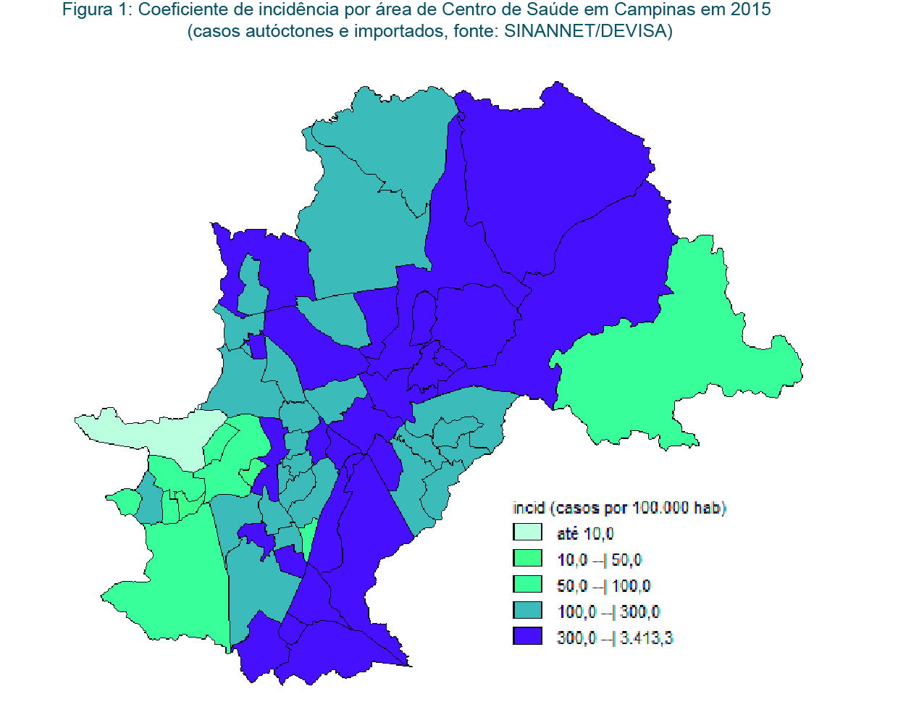

Dados de Incidência
Bairros de Campinas com mais casos de dengue a cada 100 mil habitantes
- Jardim Eulina: 4.277 casos.
- Jardim Lisa: 3.644 casos.
- Jardim Santos Dumont: 3.329 casos.
- Jardim Santo Antônio: 2.621 casos.
- Jardim São Quirino: 2.604 casos.
Mapa de Zonas de Risco
Veja o mapa abaixo para visualizar as áreas com maior incidência de focos do mosquito:
